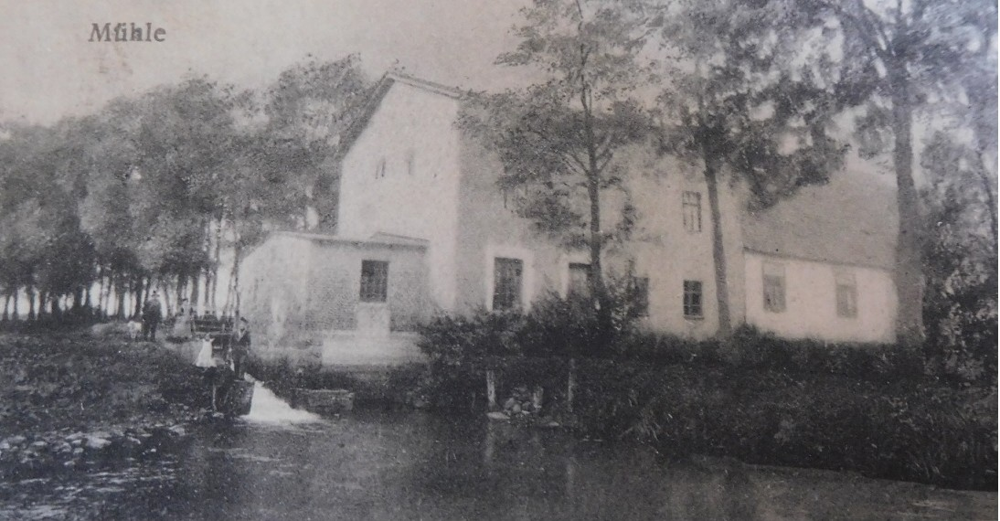
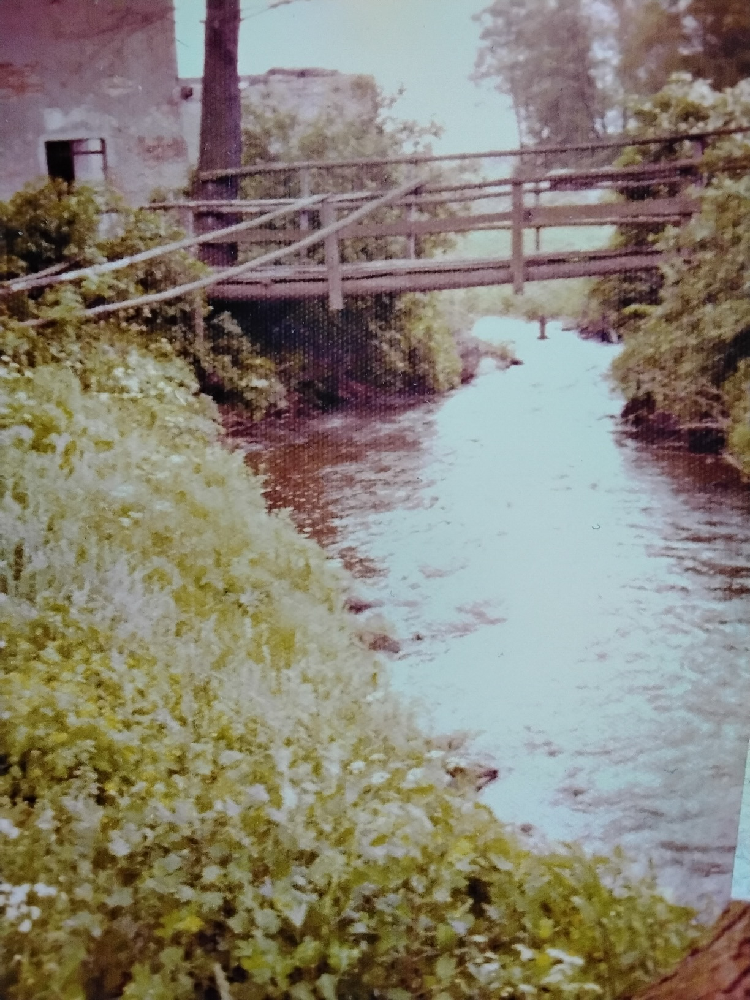
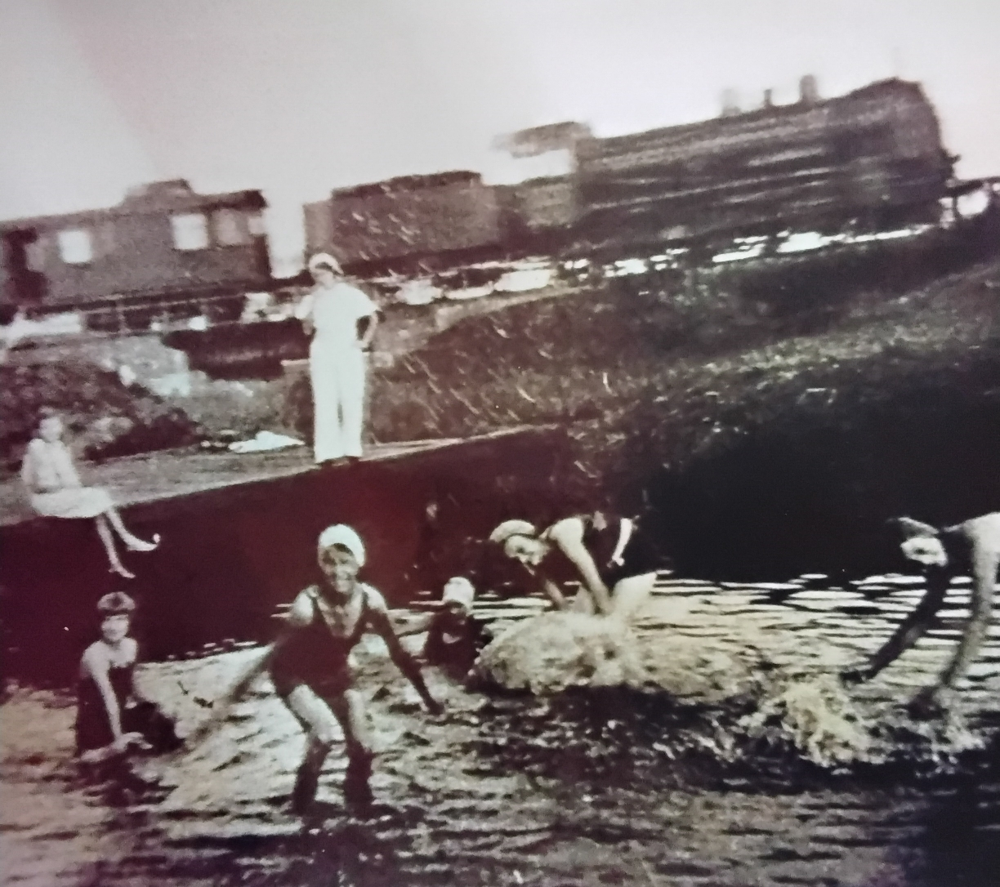
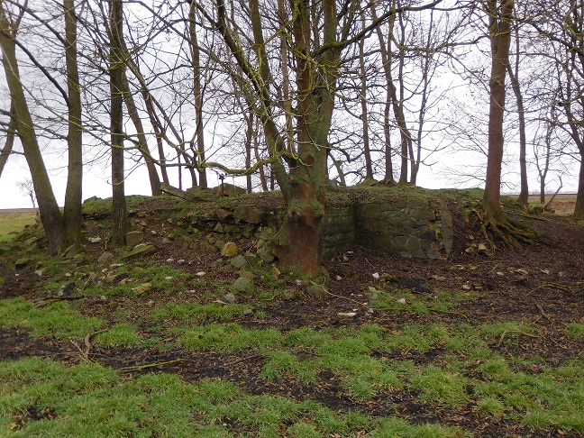

The Watermill in Grünow near Schwedt

Photo: Unknown origin
The watermill in Grünow looks back on a long history. Its first documentary mention dates from 1534 and testifies to the importance of the mill site already in the early modern period. For several centuries the mill served the processing of grain. Until 1905, grain was ground here with a single millstone set. The mill also included a village bakery that supplied the residents with fresh bread and baked goods.
At the end of the 19th century, the then estate owner Kühn applied for the right to dam water for the mill. The permit enabled the regulated operation of the water power plant and secured the use of the Welse as a source of power for the mill.
Over time, the use of the plant changed. Until 1945, the water power was no longer used exclusively for grinding, but also for generating electricity. A connected generator supplied the manor house with electrical energy. However, the generator was dismantled by the Red Army after the Second World War.
The watermill began to fall into disrepair as early as the 1950s. The millstone could be recovered and secured and today lies on the manor grounds as a visible testimony to the former use of the mill. For many years, the impounded Welse served the village children as a popular bathing spot and was an important meeting place in village life.
In the 1970s, the Welse was diverted as part of extensive land reclamation measures. The aim of these hydraulic engineering works was the drainage and irrigation of agricultural areas. As a result of the diversion, the watermill finally lost its water supply and thus its basis of operation. The plant continued to decay and was eventually left as a ruin.

Photo: private

Photo: private
Today, the historic site recalls the centuries-long importance of the watermill for the economic development and life of the village of Grünow.

Photo: private